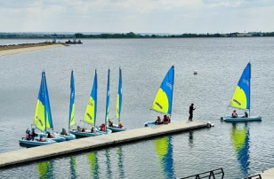

RYA Senior Dinghy Instructor Course
Take the next step in your instructing career.
Duration: 4 Days
Course Description:
This intensive four-day course is designed for experienced Dinghy Instructors who wish to progress their coaching and leadership skills to gain a nationally recognised qualification for instructing dinghy sailing. The program focuses on developing advanced instructional techniques, safety management, and coaching strategies to prepare candidates for delivering high-quality RYA dinghy training.
Throughout the course, participants will engage in both on-the-water and shore-based sessions, gaining practical experience in course delivery, assessment standards, and mentoring other instructors. Successful completion leads to recognition as a qualified RYA Dinghy Instructor Trainer, capable of training and supporting the next generation of sailing instructors.
Pre-Course Requirements
Participants must hold:
- RYA Dinghy Instructor
- RYA Safety Boat Certificate
- RYA Safe and Fun Certificate
- RYA First Aid Certificate
Have been an RYA Dinghy Instructor for at least 2 years (or 1 year full-time). The candidate must be recommendation from a Chief Instructor, RYA Principal, RYA Regional Director, or RYA Trainer. Demonstrate sailing ability at pre-entry standard.
Minimum of 18 years old
Course Description
By the end of this course, you will be able to:
- Organise and manage RYA National Sailing Scheme and Youth Sailing Scheme courses.
- Plan, control, and deliver group sailing tuition for participants of all ages and abilities.
- Supervise, direct, and support a team of Instructors and Assistant Instructors in a safe and effective learning environment.
What to Expect
- Throughout the course, you will gain hands-on experience and theoretical knowledge in:
- Planning, organising, and managing RYA National Sailing Scheme and Youth Sailing Scheme courses
- Delivering group sailing instruction to a range of ages and skill levels
- Supervising, mentoring, and assisting a team of Instructors and Assistant Instructors
- On-water management and implementation of effective safety procedures
- Centre administration, communication, and leadership skills essential for successful course delivery
- Practical and theoretical assessments conducted throughout the course

RYA Senior Dinghy Instructor
A four-day course leading to a nationally recognised qualification in dinghy sailing instruction.
Participants must hold RYA Safety Boat, Safe and Fun, and First Aid certificates, have been a Dinghy Instructor for two years (or one year full-time) and be recommended for the course.
Minimum age 18 years old.
£320.00